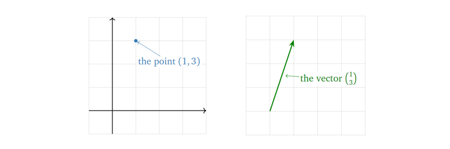
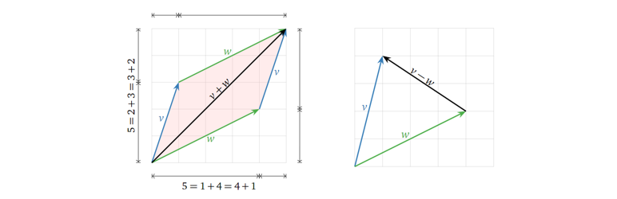

前置知识
理解 \(R^n\) （n维向量空间），增广矩阵（augmented matrix），主元（pivot），自由变量（free variable），维度（Dimension），标量（scalar）与向量（vector）的区别，知道向量、矩阵运算规则，大致知道子空间（Subspace）、基（Basis）、标准基（standard basis）等概念。
1. \(R^n\) 中的向量（Vector）
首先从最基本的概念讲起。一个n维向量在几何上有两种解释：一种是它是n维空间里的一个点（point），另一种则是向量（vector），如下图所示。

在之后的描述中，除非特别声明，否则默认向量起始于原点。但需要注意的是，这只是为了描述的方便，向量在可以在空间中任意位置，它并不一定要以原点为起点。换句话说，一个向量只由它的长度和方向决定，与其位置无关。
当然，向量也可以表示两个点之间的距离，如下图所示。

2. 向量的运算及其几何表示
向量的相加减结果可由向量间各个维度数值各自相加减得到，如下图所示。

而标量与向量的乘法结果可由标量与向量各个维度数值相乘得到，如下图所示。

所以，从几何角度上看，向量间的线性组合，由各个向量各自的缩放（与标量相乘），再将它们相加得到。 而向量的线性组合又能反映代数上的什么东西呢？假设有这么一个方程（向量方程，即由向量构成的方程，等价于一个线性代数方程）：

那么我们所要求的解（ \(x\) 与 \(y\) ），是不是就是两个向量的缩放因子？换句话说，一个向量方程（线性代数方程）有解即意味着等号右边的向量是等号左边向量们的线性组合，而解就是线性组合中的缩放因子。
3. 生成空间 （Span）
生成空间是一个很重要的概念。简单来说，对于一组向量，以他们为基能张成（线性组合而成）的空间就称为它们的生成空间，可记为：
其中 \(x_1\) 到 \(x_k\) 为标量（缩放因子），\(v_1\) 到 \(v_k\) 为基向量。
以在 \(R^3\) 中为例，一个向量张成的生成空间为一条一维直线，两个不共线的向量张成的生成空间为一个二维平面，三个不共线且不都在一个平面上的向量张成的生成空间则为一个三维空间，而三个不共线但在一个平面内的向量张成的生成空间则为一个二维平面，如下图所示。

结合上面线性组合相关的讨论，我们又可知道由一组基向量以及它们的生成空间中的任意向量组成的向量方程（代表着一个线性代数方程）有解。
4. 矩阵方程 （Matrix Equations）
首先回忆一下，一个矩阵 \(A\) 乘上一个向量 \(x\) ，可以视为矩阵 \(A\) 中各向量与向量 \(x\) 中各元素的线性组合，如下公式所示。

其中 \(x_1\) 到 \(x_k\) 为标量（缩放因子），\(v_1\) 到 \(v_k\) 为向量。所以显然，向量 \(x\) 中元素的数目应与矩阵 \(A\) 中向量的数目相等，即对于 \(Ax = b\) 而言，矩阵 \(A\) 的列数应与 \(x\) 维度一致。而这个 \(Ax = b\) 就被定义为矩阵方程 （Matrix Equation)，其中向量 \(x\) 中各元素大小未知（想想与向量方程的关系？是不是两者是等价且可以相互转换的？）。这也是线性系统的另一种表达方式。
总结一下，目前为止，结合代数中的内容，我们就有四种方式来思考一个线性系统： - 线性代数方程组（代数角度）； - 增广矩阵（代数角度）； - 向量方程（几何角度）； - 矩阵方程（几何角度）。
上面我们解释了矩阵方程与向量线性组合的关系，再回头看我们之前讨论的线性组合与生成空间的关系，是不是发现又可以串起来了？也就是说，当且仅当向量 \(b\) 在矩阵 \(A\) 中各向量张成的生成空间里， \(Ax = b\) 有解。其实这就搭起了代数中方程有解与几何中生成空间的桥梁。下面给一个直观的例子。
假如我们要求 \(Ax = b\) 是否有解？对于： \[
\mathbf{A} = \begin{pmatrix}
2 & 1\\
-1 & 0\\
1 & -1
\end{pmatrix},
\mathbf{B} = \begin{pmatrix}
0\\
2\\
2
\end{pmatrix}
\] 由上面我们的讨论可知，当且仅当向量 \(b\) 在矩阵 \(A\) 中各向量张成的生成空间里， \(Ax = b\) 有解。所以我们将 \(A\) 中各向量张成的生成空间（紫色）与 \(b\) （黑色箭头）画出，可见 \(b\) 并不在 \(A\) 中各向量张成的生成空间中，所以方程无解。
接下来我们考虑 \(Ax = b\) 有解的情况，怎么从几何上去表示其解呢？在回答这个问题之前，我们先考虑一个简单一点的例子：如果 \(b\) 为零向量时解是什么呢？考虑下面的情况：
假设我们要求 \(Ax = 0\) 的解（这类方程至少有一个平凡解(trivial solution) \(x=0\) ），对于： \[
\mathbf{A} = \begin{pmatrix}
1 & -1 & 2\\
-2 & 2 & -4
\end{pmatrix}
\] 我们用参数化的形式表示它的解，如下所示：

显然我们可以将其转换为向量方程的形式：

所以显然，方程的解为上述两个向量张成的生成空间：

将其可视化如下图所示： 
所以从几何角度上看，方程 \(Ax = 0\) 的解可以表示为某个/组向量张成的生成空间，注意区分好与上文中对于 \(Ax = b\) 讨论的区别（“解是一个生成空间（解是什么）”与“解在生成空间中（有解的条件）”的区别）。顺带回顾一下变量数目与空间维度的关系：在这个例子中，一共有三个变量（构成 \(x\) ），那么方程的解集必在 \(R^3\) 或其子空间，而这个例子中只有两个自由变量（free variable），则解集是在一个二维平面上（自由变量的数目等于解集空间的维度）。
接着回到我们之前的问题：假设 \(Ax = b\) 有解，那么它的解如何在几何上表示？它与 \(b\) 为零向量时有什么不同呢？考虑下面情况：
\[
\mathbf{A} = \begin{pmatrix}
1 & -1 & 2\\
-2 & 2 & -4
\end{pmatrix}，
\mathbf{B} = \begin{pmatrix}
1\\
-2
\end{pmatrix}
\] 类似地，我们可以得到其解为：

对比这个结果与上面 \(b\) 为零向量时的结果，显然可以看出，两者相差的只是一个平移( \(x_2\) 与 \(x_3\) 为0时的特解) \(p\) ，如下图所示：

当然，这里举的例子都是方程不是有唯一解的情况，而如果方程只有唯一解，其解在空间上表示就只是一个点了（此处 \(Ax = b\) 与 \(Ax = 0\) 相差的依然只是一个平移）。
至此，我们在几何角度上又从两个方面上去描述一个矩阵方程（ \(Ax = b\) ），注意两者的区别： - \(Ax = b\) 有解的条件（\(b\) 在矩阵 \(A\) 中列向量张成的生成空间中，为 \(x\) 选 \(b\)）； - 解集空间（对于确定的 \(b\)，为 \(b\) 选 \(x\)）。
5. 线性独立（Linear Independence）
首先回忆一下线性独立的定义：如果一组向量 \(v_1\) 到 \(v_k\) ，对于下面的方程有且仅有一个平凡解（\(x_1=x_2=...=x_k=0\)），则称它们彼此 线性独立。

换句话说，就是这组向量中，没有任何一个向量可以由其他向量线性组合得到。下图给出两个 线性依赖（不独立） 的例子：

也就是说，从几何角度上看，如果一个向量集合中，有一个向量在其他向量张成的生成空间中，那么这组向量就线性依赖（不独立）；而如果其中任何一个向量都不在其他向量张成的生成空间中，那么这组向量就线性独立。再换个角度想，我们将这些向量一个一个加入向量组中，每加入一个向量组张成的生成空间都增大，那么这组向量就是线性独立的。下面再可视化给出一个线性独立的例子：

而从代数角度上看，矩阵 \(A\) 中各列向量线性独立的条件是化简后每一列都有一个主元（也就是说对于一个列数目大于行数目的矩阵，它必然有线性依赖的列，因为没法做到化简后每一列都有一个主元）。
6. 子空间、列空间、零空间与基（Subspace, Column Space, Null Space and Basis）
什么是子空间（Subspace）？简单地说，子空间就是满足下面三个条件的 \(R^n\) 里的一些点构成的子集（Subset）： - 加法下的封闭性：该子空间中的两个两个向量相加，结果仍在该子空间中； - 标量乘法的封闭性：该子空间中的向量乘上一个标量，其结果仍在该子空间中； - 非空性：零向量在这个子空间中（子空间要存在，势必要包含了零向量）。
所以显然，由上面的前两个性质，某一子空间中的向量的线性组合（它们的生成空间）结果仍在该子空间中；且由第三个性质，子空间必然会经过原点。换句话说，子空间本身就是一个生成空间，它包含了它之中任何向量张成的生成空间。进一步讲，其本身就是其最大的一个子空间。也就说，随着选中的某一子空间中的向量数目变多，这些向量张成的生成空间也会逐步填满这个子空间。下图给出两个子空间的例子（一维与二维）：
其中黑色箭头表示用于张成生成空间的向量（基向量，下面会进一步讨论），黑点表示原点。下面再给出一些非子空间的例子：
其中紫色区域表示定义的“空间”（注意并不是子空间），黑色箭头表示“空间”上的向量，红色箭头表示由“空间”中向量线性组合得到的不在“空间”中的向量。
另外注意区别空间子集（subset）与子空间（subspace）的区别：子空间是一个需要满足上述三个条件的空间子集，也就是空间子集是一个更大的概念。
接下来我们讨论两种重要的子空间：列空间（由矩阵 \(A\) 中各列向量张成的子空间/生成空间，记作Col( \(A\) )）与零空间（对矩阵 \(A\)，满足 \(Ax=0\) 的解构成的子空间/生成空间，记作Null( \(A\) )）。下面如下矩阵 \(A\) 举例：
\[
\mathbf{A} = \begin{pmatrix}
1 & 1 \\
1 & 1 \\
1 & 1
\end{pmatrix}
\] 它的列空间可以表示为：

它的零空间可以表示为：

留意列空间是一条在三维（维度大小与矩阵的行数目相同）空间中的一维（等于矩阵化简后主元的数目）线，零空间是一条在二维（维度大小与矩阵的列数目相同）空间中的一维（等于矩阵化简后自由变量的数目）线。这边又隐含了一个重要的定理：矩阵的列空间的维度与零空间的维度之和为矩阵列的数目，在这个例子中为 \(1+1=2\) 。
上面讲完子空间/生成空间，接下来我们讨论子空间/生成空间中的基。为什么需要基的概念，我想最朴素的原因就是数学家们想用最少数量的向量来表征一个生成空间，而基于这个想法，基向量之间就必须相互独立，不然就会有冗余的向量（可以由其他向量线性组合得到）。而对于同一个非零生成空间，它可以有无数组基（比如一个平面，其上任意两个不共线的向量构成它的一组基），但基向量的数目是确定的（由生成空间的维度决定，这其实也是维度的定义）。下图给出了 \(R^2\) 的两组基：
其中左图是一组标准基。
那么如何确定列空间的基呢？对于某个矩阵，它的主元（pivot）所在列就构成了它的一组基，如下举例所示，其中RREF（Reduced row echelon form）表示简化列阶梯形矩阵：
也就是说，列空间的基向量的数目（维度）等于矩阵主元的数目。
而如何确定零空间的基呢？将零空间以参数化向量方程表示出来，也可以很轻易得到它的一组基：
类似地，零空间的基向量的数目（维度）等于矩阵自由变量的数目。也就是说，我们从基的角度出发，再次印证了上面给出的一个定理：矩阵的列空间的维度与零空间的维度之和为矩阵列的数目（主元与自由变量数目之和）。下面给出几个图进一步说明这个关系：


而其实矩阵的 秩（rank） 代表的就是其列空间的维度，零化度（nullity）代表的就是其零空间的维度。也就是说，一个矩阵的秩加上其零化度，等于其列向量的个数（\(rank(\mathbf{A})+nullity(\mathbf{A})=n\)，\(n\) 为矩阵 \(mathbf{A}\) 的列数目）。再结合之前的讨论，换一个说法就是，一个矩阵的主元的个数加上其解集的维度（自由变量的个数），等于其拥有的变量的总个数。其实这个关系也反映了我们在选择 \(Ax = b\) 中的 \(x\) 与 \(b\) 的平衡：当我们拥有的选择 \(x\) 的自由越多，那么我们拥有的选择 \(b\) 的自由就越少，而这个关系被矩阵 \(A\) 中列数目所限定。
而很自然地，当基确定之后，我们就可以基于基构建一个新的坐标系。在笛卡尔坐标系下，\(u_1 ~ u_4\) 的坐标分别为： \[
u_1 = [3, -1, 0], u_2 = [-3/2, 1, -3/2], u_3 = [5/2, -3/2, 2], u_4 = [3/2, 0, -3/2]
\] 现在考虑用 \(v_1, v_2\) 来表示它们，如下图所示：

我们就可以得到以 \(v_1, v_2\) 为基的新坐标系下\(u_1 ~ u_4\) 的坐标：
\[
u_{1\beta} = [1, 1]， u_{2\beta} = [-1, 1/2], u_{3\beta} = [3/2, -1/2], u_{4\beta} = [0, 3/2]
\] 由此，相同的几个点在另一个空间中被表示出来，这就完成了一次空间变换。当然，能这么表示的前提是 \(u_1 ~ u_4\) 几个点刚好在 \(v_1, V_2\) 的生成空间中。
参考书籍：Interactive Linear Algebra - by Dan Margalit, Joseph Rabinoff (https://textbooks.math.gatech.edu/ila/index2.html)